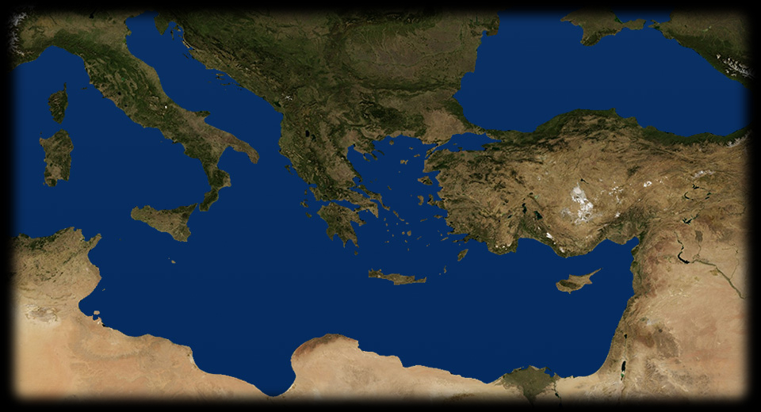
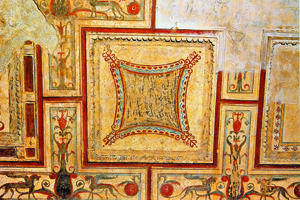
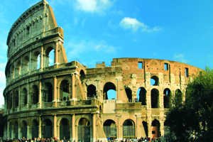
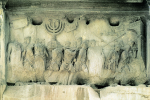

- 120 175
- 130 198
- 145 220
- 415 770
- 
DOMUS AUREA
Gli stucchi e i dipinti della Domus Aurea, la splendida residenza neroniana, sono stati riscoperti soltanto nel Rinascimento: gli imperatori successivi a Nerone, infatti, avevano fatto interrare ciò che rimaneva del palazzo. Da allora, però, la Domus ha esercitato una grande influenza sull’arte e sul gusto occidentali, a cominciare dai celebri motivi detti “a grottesche”. - 
COLOSSEO
La più spettacolare tra le rovine dell’antica Roma: il Colosseo era l’anfiteatro fatto costruire dall’imperatore Vespasiano e inaugurato da Tito, imperatori della dinastia dei Flavi. Era usato per tenervi spettacoli di gladiatori e di altro genere; la sua mole e la suggestiva architettura hanno fatto sì che esso venga ancora oggi identificato, in tutto il mondo, con il simbolo per eccellenza di Roma e dell’Impero.ROMA
Vespasiano è il primo imperatore non aristocratico. I nuovi imperatori non appartengono più all’aristocrazia senatoria, hanno origini più umili, legate alla classe dei cavalieri. POMPEI
Nel 79 d.C. l’eruzione del Vesuvio sommerge completamente, con uno spesso strato di cenere e lapilli, la cittadina di Pompei: muoiono tutti i suoi abitanti, gli edifici sepolti restano intatti. Perfettamente conservati, sono ancora oggi visitabili.GERUSALEMME
Nel 70 d.C. la guerra in Palestina porta alla distruzione di Gerusalemme, rasa al suolo da Tito dopo un lungo assedio. Nel corso della guerra perdono la vita un milione di persone. Ha inizio una nuova diaspora ebraica nel Mediterraneo.
ARCO DI TITO
La conquista di Gerusalemme del 70 a.C. è celebrata in questo bassorilievo dell’Arco di Tito che rappresenta la razzia del tempio della città: è ben visibile, fra i trofei di guerra, il classico candelabro a sette bracci detto Menoràh, uno dei simboli della religione ebraica.